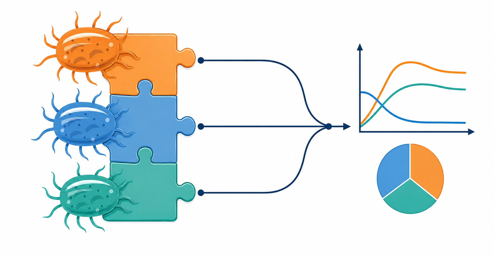

Integrated Modeling Platform
for Synthetic Microbial Communities
Mathematical Modeling Platform for Synthetic Microbial Communities
From interspecies interactions to consumer–resource dynamics, select an appropriate model to construct, simulate, and analyze synthetic microbial communities
SynCom Builder
Graphical Programming for Building Microbial Communities

Build synthetic microbial communities graphically, learn community models, and simulate dynamic changes without coding.
gLV
Generalized Lotka–Volterra Model

Simulate community population dynamics and endpoint composition using growth rates, mortality rates, carrying capacities, and the interspecies interaction matrix.
gCRM
Generalized Consumer–Resource Model

Simulate multi-resource-driven community dynamics through consumer uptake, resource supply, metabolite production, and reutilization.